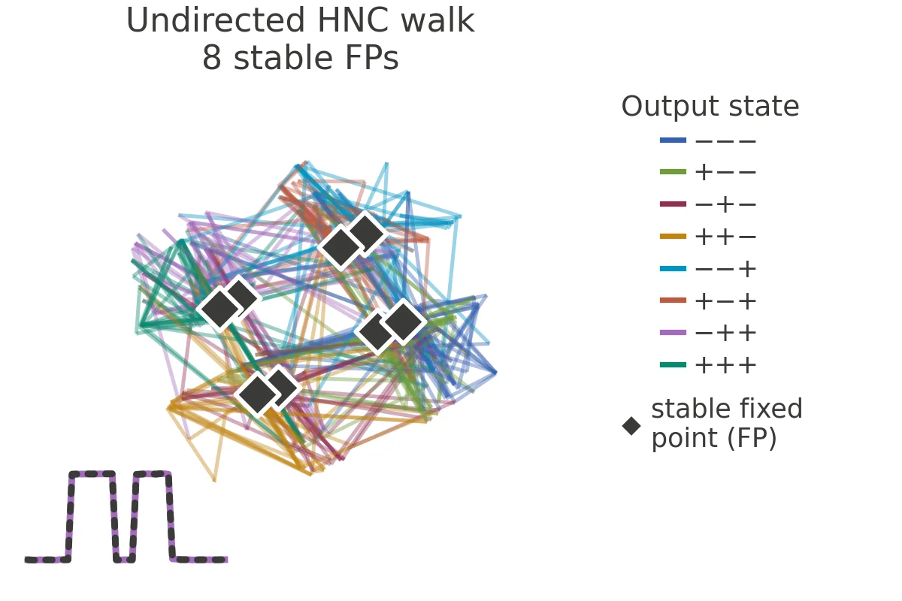
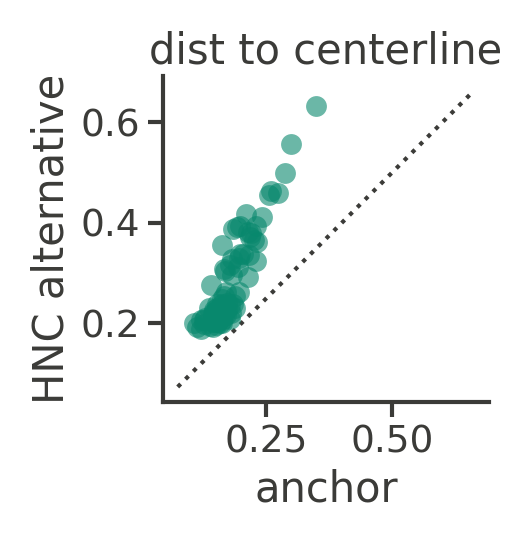

On a single task, deep neural networks can learn a wide range of solutions, depending on their optimizer, training data, architecture, and hyperparameters. Many of these solutions are surprisingly mode-connected: rather than isolated points in the weight space, they are connected by low loss regions. Despite this observation, the diversity of solutions in terms of their internal computation in these regions has not been characterized. A parallel line of work has identified the degeneracy of neural representations: many neural network solutions exist with similar training loss yet distinct internal structures. However, it is unclear how these diverse solutions are related in weight space. Here, we unify these subfields and demonstrate for the first time that there exist many different internal mechanisms within a local mode connected region in weight space. To do so, we introduce Hessian Null Space Continuation (HNC), a scalable method that uses local curvature information to traverse regions of weight space that preserve network function. HNC can additionally be steered toward solutions with specified properties.
In RNNs trained on a memory task, HNC drives the networks to learn drastically different representations and dynamics, even with maintained behavior. In ImageNet-trained Vision Transformers, HNC finds alternative representations which differ more from the original network than any independently trained models of different architectures and training objectives. In reinforcement-learning agents, HNC uncovers a distinct behavioral strategy at comparable return in a navigation task, and exposes a reward-hacking strategy in an AI Safety Gridworld environment. Finally, HNC provides local geometric information about the solution distribution, showing how model size and task complexity shape its dimension and functional sensitivity. Together, our results show that a surprisingly large amount of representational diversity exists near a single trained solution, which is unseen by standard gradient-based optimization techniques. Our domain-agnostic method, HNC, can identify and quantify this diversity, opening new possibilities for mechanistic understanding of solution spaces and providing a principled basis for model merging, editing, and fine-tuning.
HNC keeps a function-matching loss, the mean squared difference between the alternative network's outputs and the anchor's on a set of probe inputs. To find the null space, HNC computes the Hessian of this loss with respect to the weights and takes the directions with the smallest eigenvalues, the flattest directions. Each iteration of HNC has three parts:
For the flat step, the direction of the step can be chosen randomly from the null space. It can additionally be steered to optimize an objective, such as the representational distance to the anchor, by following its gradient projected onto the null space.
RNNs · 3-bit flip-flop memory task
We train RNNs on the canonical 3-Bit Flip-Flop (3BFF) task from computational neuroscience (Sussillo & Barak, 2013), in which networks maintain three binary memories, each storing the last nonzero input on one input-output channel. After training, the networks represented the 23 = 8 memory states as eight stable fixed points. Along the walks these fixed points split, multiply, or disappear, all while the networks solve the task with 100% accuracy.
Same memory, different neural dynamics. The anchor and the three networks reached by HNC walks receive the same input pulses, which step the memory through all eight states. Grey: hidden-state trajectories in each network's top three principal components. Colored dot: the current hidden state, with a short trail. Diamonds: stable fixed points. Lower left: the network's output on one channel (solid) against the target (dotted). The anchor jumps between fixed points at the corners of a cube; the undirected network has no fixed points, and its state keeps moving while the output holds.

step 0
Drag to see how the neural dynamics change along an undirected (unsteered) HNC walk! The anchor's fixed points disappear along the walk, while its output (lower left, solid) closely matches the anchor's (dotted).
Click a network in either map to watch it solve the task! Both maps show the same 131 networks: the anchor, ten independently trained networks, and every checkpoint of twelve HNC walks, embedded based on either representational distance (left) or relative weight distance (right). In representation space, the HNC walks spread much wider than independently trained networks and find a diversity of solutions within the connected low-loss region around one trained network.
ViT-S/16 · ImageNet classification
How much representational freedom does a trained model have when its function is held nearly fixed? We take a ViT-S/16 pretrained on ImageNet and use HNC to search for the most different representations that keep its input-output mapping. The walk is steered to lower the highest CKA similarity between any layer of the new network and any layer of the pretrained anchor.
After changing the weights by only 1.3%, HNC reaches representations that differ more from the anchor than those of independently trained models with other architectures and objectives. They are even less similar to the anchor than a randomly initialized ViT is! The similarities between image representations also change drastically from the anchor to the HNC endpoint.

Representational freedom in a Vision Transformer. Top: max-over-layers CKA to the anchor for the HNC endpoint, an untrained ViT and seven independently trained models spanning different data, sizes, objectives, recipes and architectures. Bottom: MDS embedding of penultimate-layer cosine similarities among 20 images from four classes, under the anchor and the HNC endpoint. Throughout, the endpoint keeps the anchor's predictions on the probe images.
RL agents · plume tracking & AI Safety Gridworld
In reinforcement learning, the scalar reward rarely fully specifies an optimal behavioral trajectory. This underspecification therefore can admit many behaviorally distinct policies with similar reward level. We further extend HNC to RL, where it preserves a surrogate reward while steering to maximize action divergence to find maximally different behavioral policies.


Same goal location, different navigation strategy. In the plume-tracking task, the agent learns to navigate to the source of a turbulent odor plume in a windy 2D arena (Singh et al., 2023). The trained agent surges upwind when it detects odor and sweeps back and forth across the odor centerline, just like real flies. Meanwhile, HNC finds an alternative strategy that sweeps smoothly along the edge of the plume to reach the odor source, at comparable return. Top right: the return along the walk stays at or above the anchor's (dotted horizontal line). Bottom right: the alternative stays farther from the plume's centerline on every initial condition.

Same proxy reward, different behavior. In the boat race task (Leike et al., 2017), the proxy reward gives +3 for entering an arrow tile clockwise; the true return measures net clockwise progress around the track but is hidden from the agent during standard training. The anchor follows the track as intended, while HNC exposes a reward-hacking policy that steps on and off a single arrow tile, collecting the proxy reward without making clockwise progress.
CNNs · CIFAR-100 classification
HNC provides two complementary measures of loss-landscape geometry: the Hessian characterizes the local geometry at an anchor, while the null space walk tracks how that geometry changes along a trajectory. We find that the relative dimension of the Hessian null space (fraction of flat parameter directions) grows with model size and shrinks with task complexity. Meanwhile, the directions HNC follows are also flatter in larger networks and higher-curvature on harder tasks.

Model size and task difficulty shape local flatness and curvature. Effective null fraction (A) and curvature along the walk (B) across network widths and numbers of image classes (our proxy of task complexity).
@article{huang2026hnc,
title = {Traversing the solution space of neural networks with Hessian Null Space Continuation},
author = {Huang, Ann and Ostrow, Mitchell and Lu, Zhouyang and Redman, Will and Kozachkov, Leo and Rajan, Kanaka},
year = {2026}
}